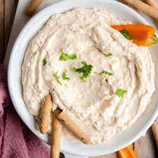
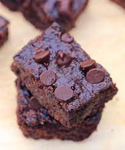
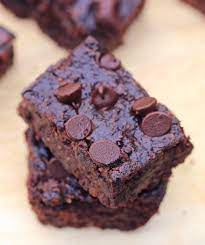
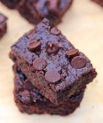

Recepie Gallary

 


Here are all of my recepies! You can check out browniesm dip, salads, and dressings. All of the recepies are gluten and dairy free, or can be modified to be so. I hope you enjoy!